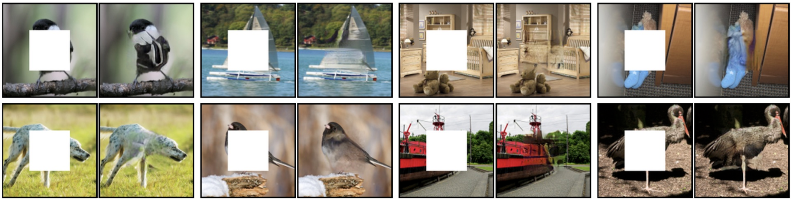

Chieng Chang, Xingyun Chang, Fei Ding, Jinchen Ma, Bingyao Wang Fall 2020 CS 4476 Computer Vision Class Project Georgia Tech
Teaser Figure

Introduction
There are many different types of image inpainting algorithms developed by researchers across the world. However, due to their differences in techniques and implementations each has significantly different results. Thus we decided to explore these techniques and compare their corresponding results.
We propose a system that effectively achieves image inpainting using various techniques and algorithms. The goal of the project is to compare the result between different implementations of image inpainting algorithms on the same image.
The expected input of the system would simply be an image marked with sections to be impainted.
The expected output of the system would be multiple images impainted by different algorithms. Users would have the freedom to choose whichever output they prefer.
Approach
We will employ various image inpainting techniques on one set of testing dataset. Our approaches include three classical, non-learning methods and one learning based deep architecture using GAN. After all implementations, we will then compare which technique is most suitable for each input image.
Traditional Approaches
PatchMatch [1]
One algorithm we will implement is PatchMatch. This algorithm utilizes a randomized correspondence algorithm to quickly find approximate nearest neighbor matches between image patches. With natural coherence in the images, we can then propagate such matches quickly to surrounding areas.
Image Completion using Planar Structure Guidance [2]
Another classical algorithm we pick is based on a paper named Image Completion using Planar Structure Guidance. As the name suggests, the approach moves beyond low-level cues by exploiting mid-level cues related to structural or spatial properties present in the image. These cues then provide guidance toward the low-level completion algorithm to make better probabilistic inferences on which patches to use.
Exemplar-Based Image Inpainting [3]
This algorithm removes sections in the input image marked by user and inpaint by generating textures and structures based on samples selected from surrounding regions. They are inspired by the partial differential equations of physical heat flow, and work convincingly as restoration algorithms. Unlike traditional algorithms, it pays special attention to linear structures -- It fills holes in images by propagating linear structures into the target region via diffusion. It introduced a term named confidence when selecting regions used for inpainting. This leads to important textures -- linear structures in this case -- to be better preserved during the hole-filling process.
Exemplar-Based Inpainting Based on Local Geometry [4]
The last algorithm, Exemplar-based inpainting based on local Geometry, is an inpainting approach that combines the ideas of both PDE-based and exemplar-based schemes. The algorithm uses an exemplar-based scheme, doing sampling and the copying of the texture from the image itself. It contains two steps - the first step is defining a filling order to enable the propagation of structure in the isophote direction, and the second one is performing a template match to find the best fit texture to fill in the hole.
Learning-Based
GAN - Semantic Image Inpainting [5]
Semantic image inpainting with progressive generative networks utilizes deep learning techniques, specifically generative adversarial networks (GANs). The newly proposed model comprises an end-to-end framework called progressive generative networks (PGNs) followed by a long short-term memory (LSTM) framework. The hole filling process is broken down into several phases of PGN and connected together with LSTM in a single forward pass.
Experiments and Results
Data Collection and Implementation
All traditional CV approaches we experiment in this project do not involve training their models. In fact, they tend to work in a similar fashion on a high level: these algorithms first find neighboring patches near the regions that require inpainting, evaluate these candidates using different techniques, and finally apply some variants to the target areas. Therefore, there is no dataset used for the traditional portion of this project. On the other hand, we will be using some sample images provided in the original paper (with proper citation) for demonstrating the effectiveness of each traditional approach, but these “datasets” are small in scale compared to the real public datasets used in deep learning.
For the learning-based part, considering that GAN is a learning-based technique, we will utilize a training dataset and a testing dataset for better accuracy and generalizability. Testing and training sets are extracted from Paris StreetView and ImageNet dataset. Paris StreetView dataset consists of 14,900 images for training and 100 images for testing. The visual class of dataset focuses on the Street Siew, such as houses, trees, street, skies, and other objects. Whereas ImageNet dataset contains about 15 million images associated with more than 20,000 categories. Considering the experimental configuration of Context Encode, we extract a subset of the ImageNet dataset in this experiment. Specifically, we randomly select 100k images from 1000 object categories according to the manner provided by Context Encoder. The testing set is painted in the same way of training progress.
We also plan to use our own data. Our data collection is used for comparing and analyzing how each of the implementations works on various types of inpainting issues. We would use images with/without text, images with a large number/small number of holes, images with big/small holes, images with holes that are in a color that is close/distinctive from surrounding colors, portrait images, landscape images, etc. In this way, we make comparison groups, use images within a group as inputs for our implementations, and print the outputs. We compare the output images and analyze the effectiveness of the implementations. We also expect to conclude that there are some implementations that work distinctively better for certain inpainting issues.
Expectation of Outcome
We hope that our experiments can reveal under which conditions does each model or algorithm perform the best. We also expect the experiments to reveal the similarities as well as differences between traditional computer vision methods and machine-learning-based algorithms. Besides, we want to see the effects of combining the results of individual models. However, there will be some uncertainties about the potential outcomes. We are not sure if the ensemble model, combining different models, could outperform a single model in most cases. We are also not sure if modern ml-based algorithms, such as GAN, could outperform traditional methods in most scenarios.
References
[1] Connelly Barnes, Eli Shechtman, Adam Finkelstein, and Dan B Goldman.
"PatchMatch: A Randomized Correspondence Algorithm for Structural Image Editing."
ACM Transactions on Graphics (Proc. SIGGRAPH) 28(3), August 2009.
[2] Huang, J. B., Kang, S. B., Ahuja, N., & Kopf, J. (2014).
Image completion using planar structure guidance.
ACM Transactions on Graphics, 33(4), [129].
[3] A. Criminisi, P. Perez and K. Toyama,
"Region filling and object removal by exemplar-based image inpainting,"
in IEEE Transactions on Image Processing,
vol. 13, no. 9, pp. 1200-1212, Sept. 2004, doi: 10.1109/TIP.2004.833105.
[4] O. Le Meur, J. Gautier and C. Guillemot, "Examplar-based inpainting based on local geometry,"
2011 18th IEEE International Conference on Image Processing,
Brussels, 2011, pp. 3401-3404, doi: 10.1109/ICIP.2011.6116441.